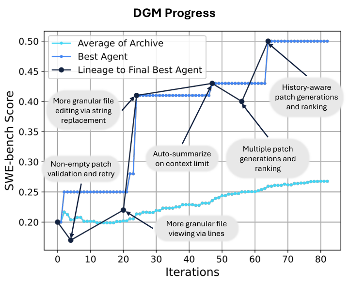

如果 Agent 刚修改完自己的代码，这一版做题分数下降了，要不要保留？Darwin Gödel Machine（DGM）保留仍具备基本编辑能力的历史版本，让它们继续产生后代。论文在所用 SWE-bench Verified 子集上报告 20.0% → 50.0%，在完整 Polyglot 上报告 14.2% → 30.7%。中间版本可能先变弱，后来才给有效改动提供基础。Jenny Zhang 等，ICLR 2026，arXiv v3
一、课题解读：为什么只沿当前最好版本改，可能错过改进
在普通软件维护里，一次改动可能让编辑接口更灵活，却让旧提示中的调用方式失效。如果立刻删除这个版本，就失去了继续调整提示以利用新接口的机会。保留多个分支有代价：需要额外评估，也需要决定哪些分支还值得尝试。自动优化 Agent 框架时，同样要处理这种取舍。
二、相关文献解读：理论证明、自动设计与版本档案
Gödel Machine 讨论有可证明收益的自我修改。DGM 使用实际任务表现作为经验依据。Automated Design of Agentic Systems 让元 Agent 提出并搜索候选设计。DGM 的区别在于，档案里的编码 Agent 可以在选为父代时承担自身框架的开发工作，开发者能力也会随版本变化。论文第 2–3 节
三、研究问题解读：分支搜索带来的提升能否迁移
- 基础模型权重固定时，编辑工具、提示和执行逻辑能提高普通编码任务的完成率吗？
- 保留多个历史版本与让后代参与开发，这两项安排分别影响多少？
- 把选中的框架交给另一个模型或用于另一套任务，能否保留收益？
四、方法解读：从父代到子代，再决定是否保留

系统从一个简洁的编码 Agent 开始。每轮从档案选父代，选择偏向表现较好且已有子代较少的版本。父代参考以前的评估记录，对自己的框架提出并实现修改。可变对象是 Agent 仓库里的工具和执行逻辑，基础模型权重保持固定，外层档案搜索逻辑也保持固定。论文第 3 节
子代先通过基础代码编辑能力检查，再按需要扩大任务评测。能编译且仍能编辑代码的版本可进入档案，即使暂时没有超过父代。于是档案中的历史最高分和通向最终版本的单条祖先轨迹可以有不同形状：前者记录累计最好表现，后者可能先降后升。论文第 4.2 节与图 3
五、实验设计与结果：主结果、分支消融与迁移
主实验：80 轮搜索后，找到的框架有多强
论文分别在 SWE-bench Verified 和 Polyglot 上做 80 轮搜索。自我修改使用 Claude 3.5 Sonnet（New），下游评估分别使用 Claude 3.5 Sonnet（New）与 o3-mini。SWE-bench 对强候选分阶段扩大至 200 道任务，Polyglot 搜索使用 50 题设置。完整 Polyglot 另评估初始和选中版本，使用一次尝试的 pass@1 口径。实验设置与主结果
| 评估 | 初始版本 | 搜索得到的最佳版本 |
|---|---|---|
| SWE-bench Verified 所用子集 | 20.0% | 50.0% |
| Polyglot 搜索子集 | 14.0% | 38.0% |
| 完整 Polyglot | 14.2% | 30.7% |
完整 Polyglot 的增益为 16.5 个百分点，小于搜索子集的 24.0 个百分点。搜索子集参与筛选，完整评估也包含这部分任务。论文另外做了跨基准迁移，能更直接检验跨任务分布的表现。第 4.4 节
补充实验：只留最近版本，会发生什么

取消档案分支、只接续最近仍可编辑的版本时，SWE-bench 和 Polyglot 分别为 23.0% 和 14.0%。保留搜索但固定负责修改的元 Agent 时，分别为 39.0% 和 28.0%。完整方法均更高，不过作者估算 SWE-bench 单次完整运行约 22,000 美元，两种主要消融各约 10,000 美元。结果体现论文配置下的方法差异，也留下了等成本比较的问题。附录表 1 与成本估算 · Appendix E.1
跨基准时，SWE-bench 上选出的版本在 Polyglot 达 28.9%，高于初始版 14.2%。反方向达到 24.5%，初始版为 20.0%。同一套框架改用 o3-mini 运行所用 SWE-bench 子集时，论文也报告 23.0% → 33.0%。这些是特定版本在新评估条件下的测试。论文图 4
六、我们自己的思考
课题思考：这个领域在研究什么
这篇论文把「该保留哪一种失败」变成算法设计问题。一个分支的短期任务分数较低，但可能引入了一种日后可配合其他改动使用的工具。档案让这些互补改动有机会在同一条谱系里汇合。
局限问题思考：目前还存在哪些问题
候选形成与选择共用部分评测，最高分容易受到反复搜索和随机性的影响。运行费用也并未对齐。基本编辑能力检查只覆盖一个维度，部署所需的可靠性与权限约束还需要独立验证。论文的结论来自固定预算内的编码实验。论文第 5–6 节
解决方案思考：这些问题有哪些解决方向
用等总成本比较档案搜索、只保留最佳版本和简单随机搜索，并在多个独立种子下报告最终分数和费用分布。设置与搜索题分离的任务和部署检查，由固定的外部评估器检查每个候选。档案保留谱系、版本和评估证据，便于逐条审查哪些改动实际有用。
插图来自 Zhang 等人的 DGM v3，按 CC BY 4.0 引用。